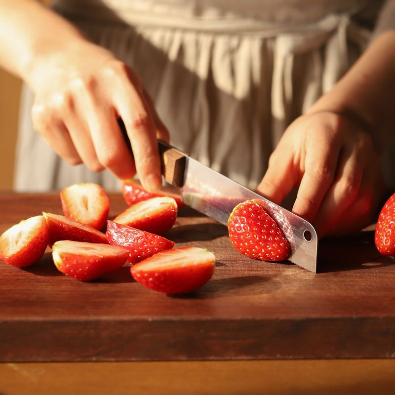
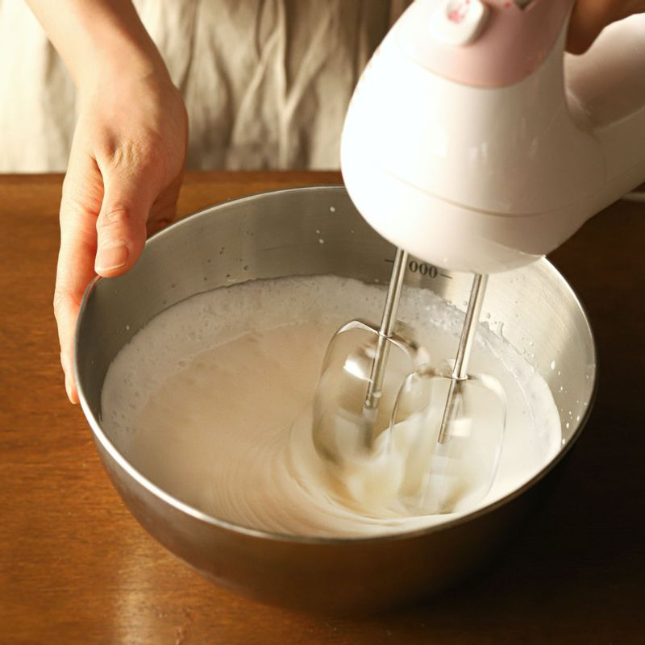
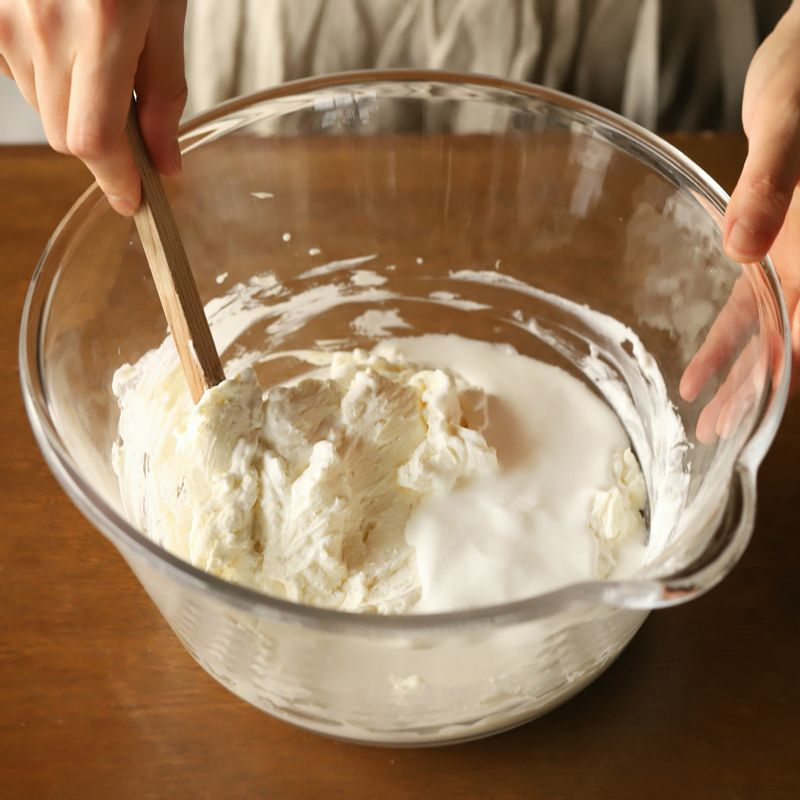
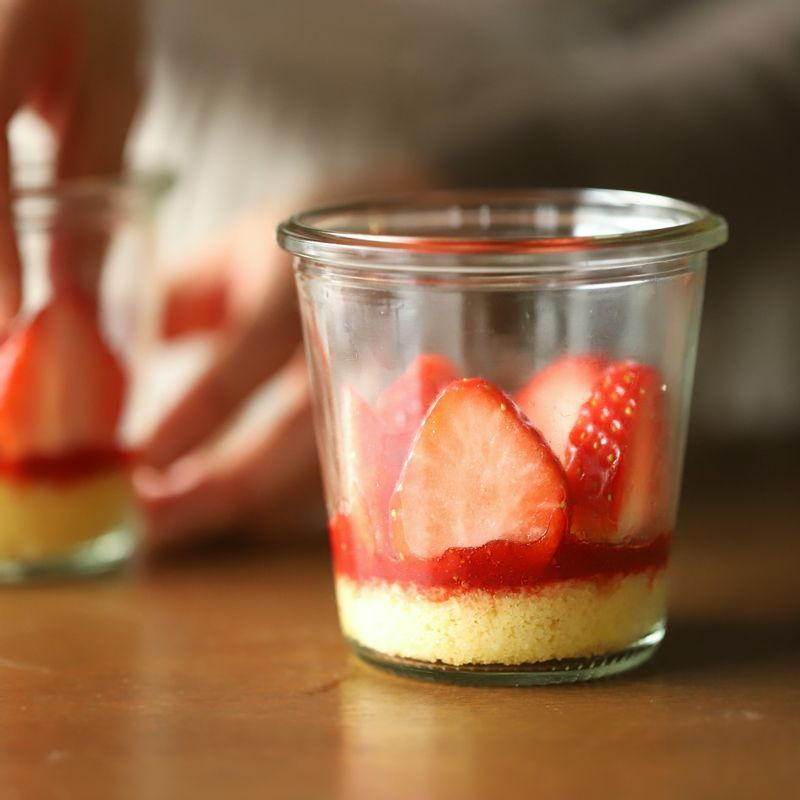
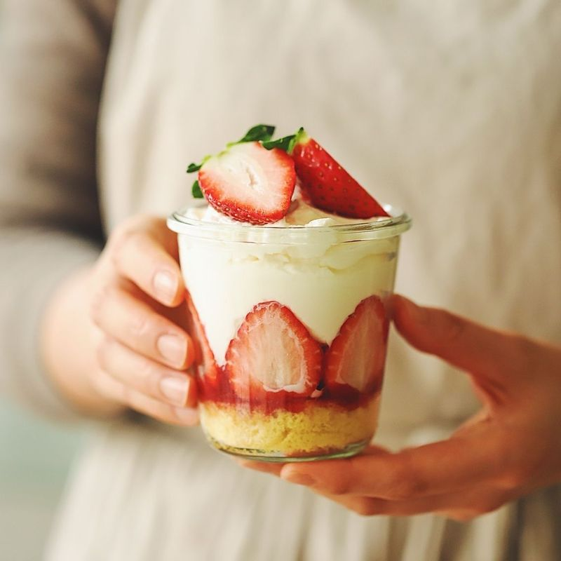

-

딸기는 깨끗이 씻은 후 물기를 제거해주세요. 꼭지를 제거하고 모양대로 3등분으로 잘라주세요. 볼에 딸기 시럽 재료를 섞어주세요.
(tip. 딸기 퓌레가 없을 경우 딸기나 냉동딸기를 으깨어 설탕과 레몬즙을 넣어 만드시거나 기호에 따라 커피 시럽을 발라 만드셔도 돼요.)
-

볼에 생크림 휘핑 재료를 넣고 핸드믹서나 거품기로 60~70%정도 휘핑을 해주세요.
-

마스카포네 치즈, 설탕을 넣어 핸드믹서나 거품기로 부드럽게 풀어주세요. 휘핑한 생크림을 2~3번에 나누어 넣어 부드럽게 섞어주세요.
-

카스테라를 용기에 맞는 크기로 잘라 용기 바닥에 깔아주세요. 딸기 시럽을 카스테라 위에 바르고 딸기의 단면이 보이도록 넣어주세요.
-

크림을 가득 채운 후 남은 딸기와 민트로 장식해 완성해 주세요.